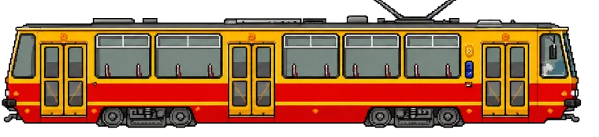

Linia 8 / Zarzew - Teofilów
Ostatni Kurs na Teofilów
Tramwajowa gra arcade na trasie linii 8 w Łodzi
GRAJ
Cm. Zarzew
Piotrkowska Centrum
Teofilów
Podgląd trasy
Kluczowe punkty linii 8
- Cm. Zarzew
- Widzew Stadion
- Piotrkowska Centrum
- Dw. Łódź Kaliska
- Włókniarzy
- Teofilów
Autorski projekt
Gra stworzona przez Tomasza Tomasa
Osobista, łódzka pocztówka z trasy linii 8: z prawdziwymi przystankami, miejskim klimatem i presją ostatniego kursu.